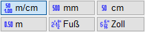

")

·Alternativer Aufruf: mittlere Maustaste auf eine Maßlinie oder einen Maßtext.
·Folienbelegung: Wenn AutFol aktiviert ist (untere Menüleiste), werden die Maßkettenelemente in der Folie 2 abgelegt.
Erzeugen, Bearbeiten und Konfigurieren von Bemaßungen.
Vorbemerkungen
·Mit ISBCAD Versionen < 2018 erstellte Zeichnungen können ggf. Maßketten enthalten, die nicht korrekt dargestellt werden. Generieren Sie in diesem Fall die Maßketten neu.
·Beim Vermaßen werden Maßkettenpunkte erzeugt, die als Bezugspunkt für die Maßketten verwendet werden. Die Maßkettenpunkte sind auf der Zeichenfläche sichtbar, werden aber nicht ausgedruckt.
·Sie können den Kippwinkel für Maßzahlen einstellen und somit die Leserichtung beeinflussen.
Funktionen |
Beschreibung |
|---|---|
Maßkette mit relativen Maßen zeichnen. |
|
Maßkette mit relativen Maßen automatisch zeichnen. |
|
Höhenkote setzen. |
|
Maßkette mit absoluten Maßen zeichnen. |
|
Winkel vermaßen. |
|
Kreis und Teilkreis vermaßen. |
|
Angabe der Radien von Kreisen und Teilkreisen. |
|
Punkte auf einem Kreisbogen vermaßen. |
|
Höhenkote im Grundriss erstellen. |
|
Maßkette verschieben. |
|
Maßkettentext verschieben. |
|
Maßketten aktualisieren. |
|
Maßkette ändern. |
|
Maßkette löschen. |
|
Maßketten konfigurieren. |
|
Maßkettenpunkte modifizieren. |
|
Maßkette durch einen Text ergänzen. |
Optionen |
Beschreibung |
||||||||||||
|---|---|---|---|---|---|---|---|---|---|---|---|---|---|
|
Auswahl des Vermaßungsstils. |
||||||||||||
Symbole für Höhenkoten im Grundriss [HökoGr]. Rund nicht gefüllt / gegenüberliegende Viertel gefüllt / Dreieck nicht gefüllt / gefüllt. |
|||||||||||||
Vermaßung mit oder ohne Gesamtmaß; Anordnung des Gesamtmaßes entsprechend Neigung der Maßkette: unten-rechts oder oben-links. |
|||||||||||||
|
Übernimmt die Maßketten-ID aus einer vorhandenen Maßkette sowie die Einheiten und die Einstellung mit/ohne Gesamtmaß. |
||||||||||||
 |
Auswahl der Maßeinheiten:
Bei den Höhenkoten merkt sich ISBCAD die zuletzt gewählte Einstellung. |
||||||||||||
|
Aus-/Einschalten des Differenzmodus. Wenn Sie Maßketten mit individuellem Abstand [Retan] platzieren möchten, gilt folgendes: Minus heißt unterhalb, Plus oberhalb der angeklickten Linie (des Kreises) in Bezug auf die Textrichtung. |
||||||||||||
|
Optionen zur Auswahl der Vermaßungspunkte. /+: Punkte hinzufügen; /-: Punkte entfernen; /x: Alle Punkte entfernen. Beim Erzeugen der Maßketten werden Punkte angeklickt und durch Kreuze markiert. Um falsch angeklickte Punkte zu entfernen, aktivieren Sie die Schaltfläche Punkte entfernen und klicken die zu löschenden Punkte an. Um alle Punkte zu löschen, müssen Sie Alle Punkte entfernen anklicken. Tab-Taste: Wechselt zwischen Punkte hinzufügen und Punkte entfernen. |